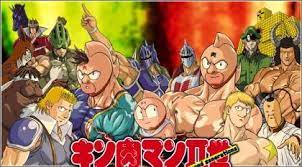

쾌걸근육맨 2세
- 방영기간: 2002년1월9일 ~ 2006년3월29일
- 작가: 유데타마고
- 화수: 51화
줄거리
근육맨 스구루를 중심으로 한 정의의 초인이,지구로부터 악행초인을 추방한지 28년이 지난 시기.
평화를 되찾고 있던 지구에, 다시 악행초인이 쳐들어 온다. 게다가 전설의 초인으로 불리울만한 로빈 마스크나 라면맨들도
육체가 쇠약해져 젊은 신세대 악행초인에게까지 고전하고 있는 힘든 상황. 이에 신세대 정의초인을 양성해야할 필요성을 느낀 전설 초인들은,
헤라클레스 팩토리를 개설한다. 이곳의 제1기 졸업생에게는, 근육맨의 혈통을 이은 II세 근육맨 "킨니쿠(근육) 만타로"의 이름도 포함되어 있었다.
지구와 일본의 평화를 지키기위해,근육맨 II세는 계속 싸운다!